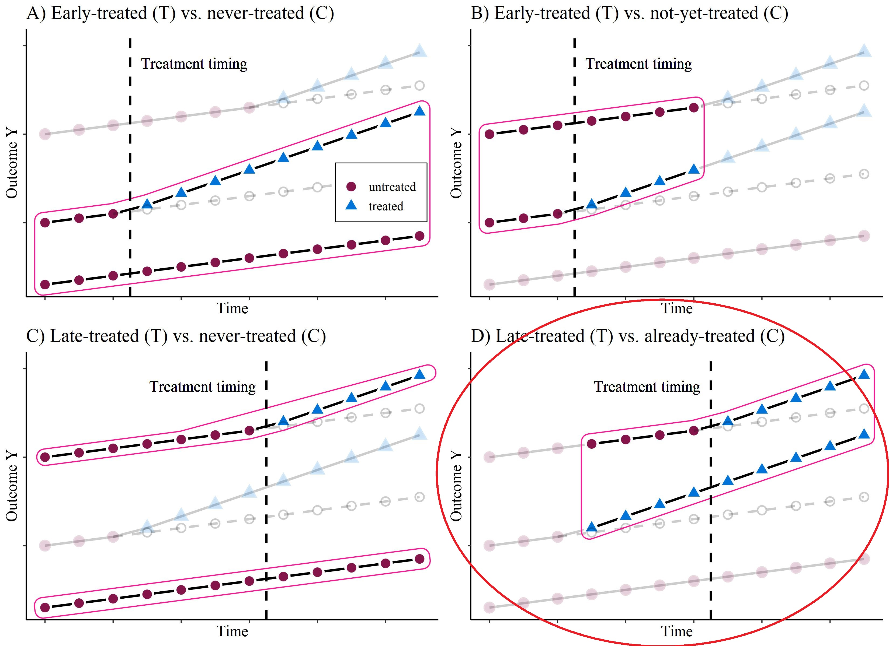
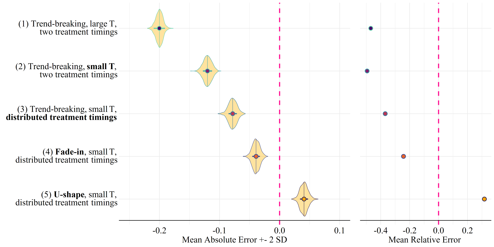
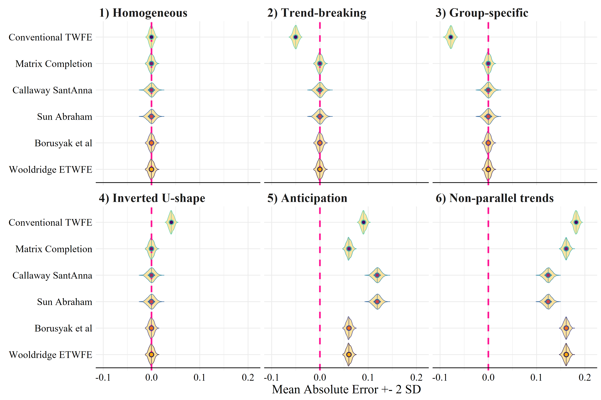

Difference-in-differences
(and beyond)
January 27, 2026
Outline
Classical difference-in-differences
- Estimand
- Assumptions
- TWFE estimation
Problems with TWFE
- Time heterogeneity
- Unit heterogeneity
- Bias decomposition
Extensions and alternatives
- Beyond 2x2 (staggered adoption)
- Alternative estimators
- Synthetic Control, Matrix Completion, Synthetic diff-in-diff
Classical diff-in-diff
Motivating example

Basic ingredients
The simplest difference-in-differences requires information from two groups (treated vs control), in two time periods (pre-treatment for everyone vs post-treatment for the exposed group)
The basic idea is to use repeated observations over time to adjust for baseline differences between groups, and temporal trends.
(Usually described as accounting for “time invariant unobserved confounding”)
Our target quantity is the average treatment effect on the treated in the post-exposure period:
\[ E[Y_{1,post}|D=1] - E[Y_{0,post}|D=1] \]
Missing potential outcome
\[ E[\color{blue}{Y_{1,post}|D=1}] - E[\color{red}{Y_{0,post}|D=1}] \]
It is easy to notice that:
Assuming SUTVA, the blue term can be directly observed
However, the red term is missing! We need candidates to fill in this empty cell
Candidate comparisons
Let’s check some candidates to fill in for \[\color{red}{E[Y_{0,post}|D=1]}\]
(Recall that we have our observed data in a 2x2 matrix)
| \(D=0\) | \(D=1\) | |
|---|---|---|
| \(T=pre\) | \(\color{grey}{Y_{0,pre}|D=0}\) | \(\color{grey}{Y_{0,pre}|D=1}\) |
| \(T=post\) | \(\color{grey}{Y_{0,post}|D=0}\) | \(\color{blue}{Y_{1,post}|D=1}\) |
Candidate comparisons
Let’s check some candidates to fill in for \[\color{red}{E[Y_{0,post}|D=1]}\]
(Recall that we have our observed data in a 2x2 matrix)
| \(D=0\) | \(D=1\) | |
|---|---|---|
| \(T=pre\) | \(\color{grey}{Y_{0,pre}|D=0}\) | \(\color{grey}{Y_{0,pre}|D=1}\) |
| \(T=post\) | \(\color{red}{Y_{0,post}|D=0}\) | \(\color{blue}{Y_{1,post}|D=1}\) |
Candidate comparisons
Let’s check some candidates to fill in for \[\color{red}{E[Y_{0,post}|D=1]}\]
(Recall that we have our observed data in a 2x2 matrix)
| \(D=0\) | \(D=1\) | |
|---|---|---|
| \(T=pre\) | \(\color{grey}{Y_{0,pre}|D=0}\) | \(\color{red}{Y_{0,pre}|D=1}\) |
| \(T=post\) | \(\color{grey}{Y_{0,post}|D=0}\) | \(\color{blue}{Y_{1,post}|D=1}\) |
Candidate comparisons
Let’s check some candidates to fill in for \[\color{red}{E[Y_{0,post}|D=1]}\]
(Recall that we have our observed data in a 2x2 matrix)
| \(D=0\) | \(D=1\) | |
|---|---|---|
| \(T=pre\) | \(\color{red}{Y_{0,pre}|D=0}\) | \(\color{red}{Y_{0,pre}|D=1}\) |
| \(T=post\) | \(\color{red}{Y_{0,post}|D=0}\) | \(\color{blue}{Y_{1,post}|D=1}\) |
Candidate estimator
We can use the 2x2 matrix to combine information across groups and time periods:
\[ \delta = \big(E[Y|D=1,Post] - E[Y|D=1, Pre] \big) - \big(E[Y|D=0,Post] - E[Y|D=0, Pre] \big) \]
Assuming SUTVA, we can write
\[ \delta = \big(E[Y_1|D=1,Post] - E[Y_0|D=1,Pre] \big) - \big(E[Y_0|D=0,Post] - E[Y_0|D=0,Pre] \big) \]
Sources of bias
Now, we can add zero
\[ \delta = \big(E[Y_1|D=1,Post] - E[Y_0|D=1,Pre] \big) - \big(E[Y_0|D=0,Post] - E[Y_0|D=0,Pre] \big) \]
\[ + \color{red}{E[Y_0|D=1, Post] -E[Y_0|D=1, Post]} \] Rearranging the terms, we get:
\[ \delta = \underbrace{E[Y_1|D=1,Post] - \color{red}{E[Y_0|D=1,Post]}}_{ATT} \]
\[ + \underbrace{\big(\color{red}{E[Y_0|D=1,Post]} - E[Y_0|D=1,Pre]\big) - \big(E[Y_0|D=0,Post] - E[Y_0|D=0,Pre]\big)}_{\text{Bias due to non-parallel trends}} \]
Identification assumptions
Therefore, the identification assumptions we need for the diff-in-diff estimator to be consistent is called parallel trends
\[ E(\Delta Y_0|D=1) = E(\Delta Y_0|D=0) \]
Or, in a maybe more familiar notation,
\[ \Delta Y_0 \perp\!\!\!\perp D \]
Identification assumptions
Therefore, the identification assumptions we need for the Diff-in-diff estimator to be consistent is called parallel trends
\[ E(\Delta Y_0|D=1) = E(\Delta Y_0|D=0) \]
Or, in a maybe more familiar notation,
\[ \Delta Y_0 \perp\!\!\!\perp D \]
As with other identification assumptions, parallel trends is an unverifiable assumption! Why?
It’s an assumption about counterfactual variables!
It’s not equivalent to “pre-trajectories”
However, checking for possible pre-trends is a common and good practice! (“event study”)
Example: Minimum wage

Example: Medicaid and mortality

Example: Medicaid and mortality

Identification assumptions
Additionally, and similarly to other strategies, we need extra assumptions:
SUTVA or consistency
No anticipation
And, as usual, the critical question is why should we believe that these assumptions are reasonable?
What do we understand about the assignment process?
What do we understand about the outcome process?
What is the role of covariates in our analysis, if any?
TWFE estimation
The difference-in-difference estimator can be easily written in a regression form:
\[ E(Y) = \alpha + \gamma D + \lambda T + \delta (D \times T) \]
Where,
\(\alpha\): untreated, pre period
\(\alpha + \gamma\): (not yet) treated, pre period
\(\alpha + \lambda\): untreated, post period
\(\alpha + \gamma + \lambda + \delta\): treated, post period
This is known as the two-way fixed effect model
Problems with TWFE when treatment is dynamic
It is tempting to apply the same logic and extend the TWFE model for multiple time period and multiple groups.
But not so fast!
Now we know this bring it own (many) issues:
When treatment status is non-absorbing
When treatment effect is heterogeneous across units and time
Think about design vs model-based arguments
DID with multiple periods
With multiple periods, we usually turn to the two-way FE:
\[ y_{it} = \beta_{TWFE} D_{it} + \alpha_i + \zeta_t + \epsilon_{it}. \] Where \(\alpha_i\) is the unit fixed effects, \(\zeta_t\) is fixed effects for time periods.
And we assume that \(\beta_{TWFE}\) produces a similarly intuitive causal estimator.
However, …
However, …
with 3 groups: 1) Early treated, 2) Late treated, 3) Never treated.

How bad is it?
Ruttenauer and Aksoy (2026) 
Extensions and alternatives
A potential solution
Disaggregation based estimators, such as @Callaway.2020.

A potential solution
Dynamic Diff-in-Diff [@Callaway.2020]
- Estimate all single \(2 \times 2\) Diff-in-Diff comparisons
- for each treatment-group \(g\) and time period \(t\)
\[ \delta_{g,t} = \mathrm{E}(\Delta y_{g}) - \mathrm{E}(\Delta y_{C}) = [\mathrm{E}(y_{g}^{t}) - \mathrm{E}(y_{g}^{g-1})] - [\mathrm{E}(y_{C}^{t}) - \mathrm{E}(y_{C}^{g-1})], \]
- where the control group can either be the never-treated or the not-yet-treated.
- Average the ‘good’ comparisons into a single / time-specific treatment measure
\[ \theta_D(e) := \sum_{g=1}^G \mathbf{1} \{ g + e \leq T \} \delta(g,g+e) P(G=g | G+e \leq T), \]
- where \(e\) specifies for how long a unit has been exposed to the treatment.
Another solution: Borusyak DiD imputation
We start with the assumption that we can write the underlying model as:
\[ Y_{it} = A_{it}^{'}\lambda_i + X_{it}^{'}\delta + D_{it}^{'}\Gamma_{it}^{'}\theta + \varepsilon_{it} \]
- where \(A_{it}^{'}\lambda_i\) contains unit FEs, but also allows to interact them with some observed covariates unaffected by the treatment status
- and \(X_{it}^{'}\delta\) nests period FEs but additionally allows any time-varying covariates,
- \(\lambda_i\) is a vector of unit-specific nuisance parameters,
- and \(\delta\) is a vector of nuisance parameters associated with common covariates.
The algorithm
- For every treated observation, estimate expected untreated potential outcomes \(A_{it}^{'}\lambda_i + X_{it}^{'}\delta\) by some unbiased linear estimator \(\hat Y_{it}(0)\) using data from the untreated observations only,
- For each treated observation (\(\in\Omega_1\)), set \(\hat\tau_{it} = Y_{it} - \hat{Y}_{it}(0)\),
- Estimate the target by a weighted sum \(\hat\tau = \sum_{it\in\Omega_1}w_{it}\hat\tau_{it}\).
See @Borusyak.2021.
Yet another solution: Extended TWFE
@Wooldridge.2021. issues of TWFE are not flaws of the estimator, but of a misspecification of the functional form.
\[ y_{it} = \eta + \zeta_t + \boldsymbol{\mathbf{X}}_i(\beta + \nu_t) + \sum_{j=g} \left( \alpha_g + \boldsymbol{\mathbf{X}}_i \beta_g + \mathbf{1}\{t > g\}(\alpha_g \times \zeta_t + \bar{\boldsymbol{\mathbf{X}}_g}\beta_{gt}) \right) + \epsilon_{it}. \]
\(\eta\) is the global intercept, \(\zeta_t\) are time fixed effects, and \(\boldsymbol{\mathbf{X}}_i\) is the vector of pre-treatment covariates. The coefficients \(\beta\) and \(\nu_t\) capture the baseline and time-varying effects of these covariates. \(\alpha_g\) denotes fixed effects for treatment cohorts, where each group \(g\) receives treatment at time \(g\). The indicator \(\mathbf{1}\{t > g\}\) equals 1 if unit \(i\) is observed after treatment and 0 otherwise. \(\bar{\boldsymbol{\mathbf{X}}_g}\) represents group-mean-centered pre-treatment covariates, and \(\beta_{gt}\) captures the interaction between group indicators and covariates. The term \(\alpha_g \times \zeta_t\) represents interactions between cohort and time indicators, which are used to recover group- and time-specific treatment effects \(\delta_{g,t}\).
Individual coefficients are not directly interpretable. However, they can be used to compute
And (many) other solutions
Conventional TWFE with an event-study framework (time FE*treatment interactions)
Extended TWFE (Wooldridge)
Disaggregation based methods (Callaway & Santanna, Sun and Abraham)
Model-based imputation (Borusyak ea)
Matrix completion (Athey)
Ruttenauer and Aksoy (2026): option 1 is often OK in sociology, it doesn’t harm to check another one for robustness (e.g. Borusyak ea or CS)
Elephant in the room
The new dynamic DID methods indeed solve time/group heterogeneity problem. But they cannot help with violations of causal assumptions

Ruttenauer and Aksoy (2026). Note in the figure conventional TWFE is the most naive form (single coefficient).

Panel data